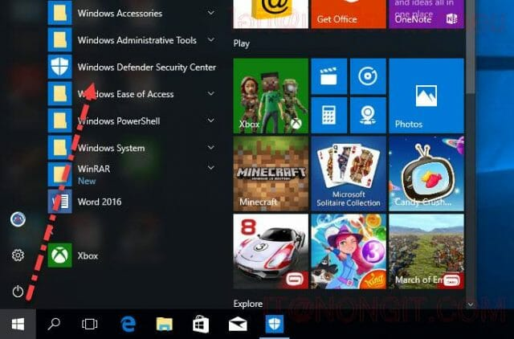
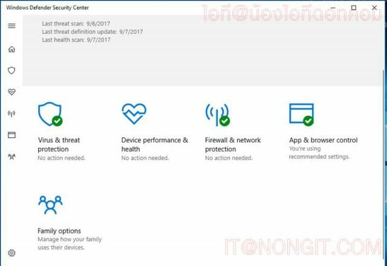
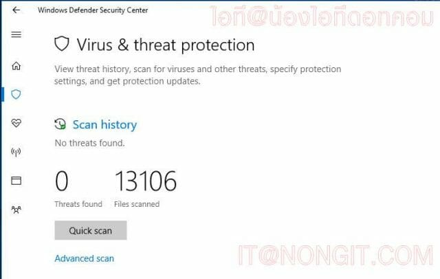
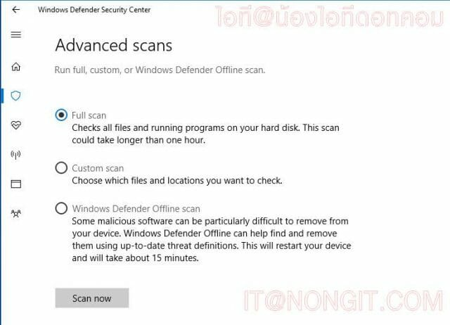
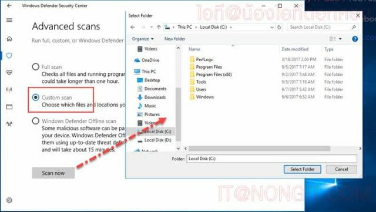
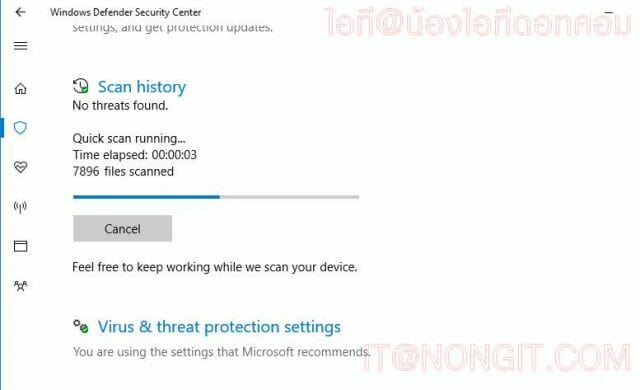
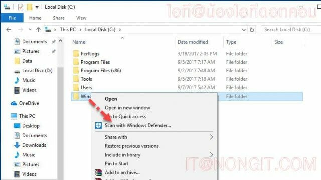

|
สแกนไวรัสบน Windows 10 มีให้มาพร้อมใช้งาน |
วิธีใช้งาน Windows Defender Security Center
- คลิก Start จากนั้นเลื่อนมาที่ Defender Security Center

- ที่หน้าโปรแกรมให้เลือก Virus & threat protection ครับ

- ที่หน้านี้ก็จะเห็นประวัติการใช้งาน เราสามารถคลิก Quick scan ได้เลยซึ่งเป็นการสแกนเฉพาะในส่วนของ system ของ windows และจะเห็นว่ามีส่วนของเมนู Advanced scan ให้ทำการคลิกไปดูกันครับ

- ที่หน้านี้ก็มีตัวเลือกให้ผู้ใช้สามารถเลือกได้ว่าจะสแกนแบบไหน มีทั้งแบบ Full scan คือสแกนทุกไดร์ฟบนเครื่อง โดยเป็นสแกนแบบละเอียด ซึ่งใช้เวลานานมาก กดสแกนแล้วย่อไว้ ใช้งานเครื่องปกติได้ ปล่อยให้สแกนไปแต่เครื่องที่สเปคต่ำอาจจะทำให้เครื่องอาจจะมีช้าบ้าง

- และแบบ Custom scan คือสแกนแบบกำหนดเอง โดยเลือกเฉพาะไดร์ฟ หรือ โฟลเดอร์ที่ต้องการสแกนได้เอง
- ส่วนหัวข้อ Windows Defender Offline scan คือสแกนแบบไม่เปิดใช้งานโปรแกรมอะไร โดยเมื่อสั่งสแกนตัวเลือกนี้ เครื่องจะ restart เครื่องและเข้าโหลดสแกนไวรัส จึงทำให้การสแกนไฟล์โปรแกรมต่างได้โดยไม่ติดสิทธิ์การเข้าถึงไฟล์ (Permission) เพราะโปรแกรมนั้นๆไม่ได้ทำงาน เมื่อสแกนเสร็จก็จะเข้าหน้า windows ตามปกติครับ

- เมื่อสั่งสแกนก็เห็นหน้าต่างทำงานแบบนี้ครับ

- และอีกวิธีที่ง่ายๆคือ คลิกขวาที่โฟลเดอร์นั้นๆ แล้วเลือก Scan with Windows Defender… ได้เลยครับ ซึ่งเลือกได้ทั้งแบบไฟล์ แบบโฟลเดอร์ และแบบสแกนทั้งไดร์ฟ

- เป็นไงบ้างครับ การใช้งานเบื้องต้นของโปแรกรมสแกนไวรัสที่ทาง Microsoft ติดตั้งมาให้พร้อมใน Windows
|
|
|